Candidate List 20260929Last night — ZTF: 2,227 passed basic cuts (30 young) · LSST: 0 passed basic cuts (0 young)Previous Day Next Day
Section 1: New Sources (age<1d) Section 2: Old (1-5d) sources observed last nightplaceholder
Section 1: New Afterglow/FBOT Cands Last Night (1)
1. [ZTF] ZTF26abxztfm (FBOT?) (TNS: AT 2016abr) [NED transient: AT 2016abr (SN, 0.2″) — reported, not trusted] [Back to Top] [Share] [Trigger Swift] [Fritz Alert] [Fritz Source] [Lasair]RA, Dec: 98.37161, 38.9192 6h33m29.19s, 38d55m9.12sGalactic (l, b): 175.81997, 13.43121 ext(g-r) = 0.156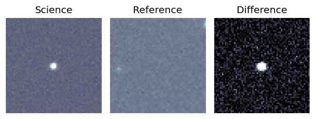
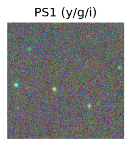
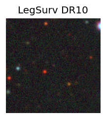
TESS: Sectors [20 60 73]
PS1: 0 sources in 3 arcsec
LegacySurvey: 1 sources in 3 arcsec Closest: d = 0.27 arcsec, 266.7 deg (east of north) photoz=0.92 (68% bounds 0.73, 1.12), type=PSF peak abs mag (ext. corrected) = -28.05 (68% bounds -27.41, -28.58)
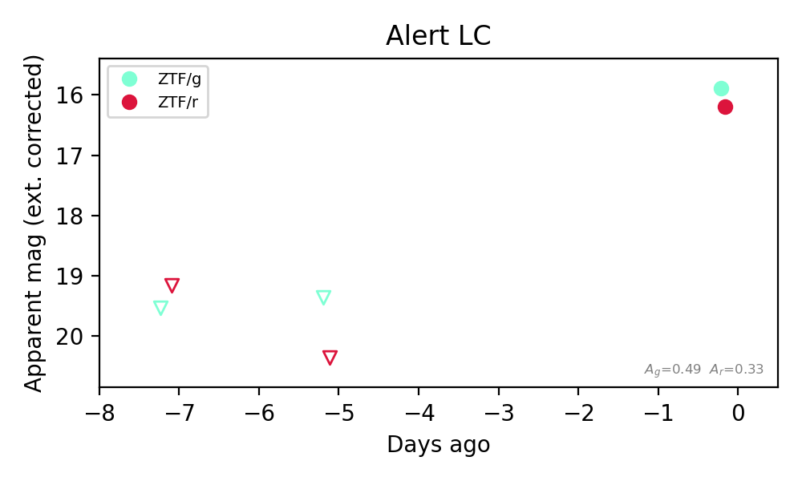
Extinction-corrected gr color:
From alerts: -0.3 +/- 0.05 mag
Rise Rate:
g: 0.7 mag/day
r: 0.84 mag/day
Fade Rate:
Section 2: Older Sources Observed Last Night (7)
0. [ZTF] ZTF26abwqpgt (Afterglow?) [Back to Top] [Share] [Trigger Swift] [Fritz Alert] [Fritz Source] [Lasair]RA, Dec: 257.36063, 46.51575 17h 9m26.55s, 46d30m56.68sGalactic (l, b): 72.35736, 36.47704 ext(g-r) = 0.027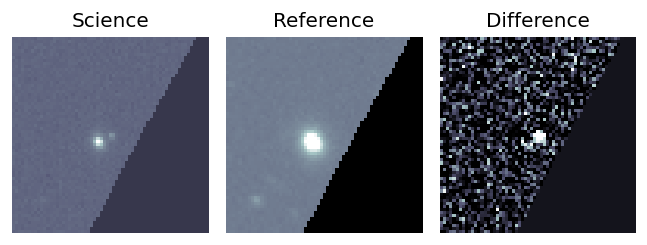
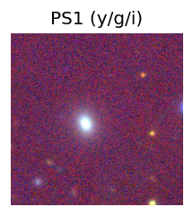
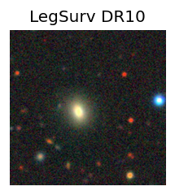
TESS: Sectors [ 24 26 51 52 53 78 79 80 117 118]
SDSS (<15 kpc):Found SDSS phot-z: z=0.09; peak abs mag = -18.98
NED photo-z only: WISEA J170926.95+463054.7 (G, 4.6″) z=0.1023 [zflag PUN] — not used for peak abs mag
PS1: 0 sources in 3 arcsec
LegacySurvey: 1 sources in 3 arcsec Closest: d = 1.54 arcsec, 256.3 deg (east of north) photoz=0.3 (68% bounds 0.04, 0.44), type=REX peak abs mag (ext. corrected) = -21.89 (68% bounds -17.18, -22.89)
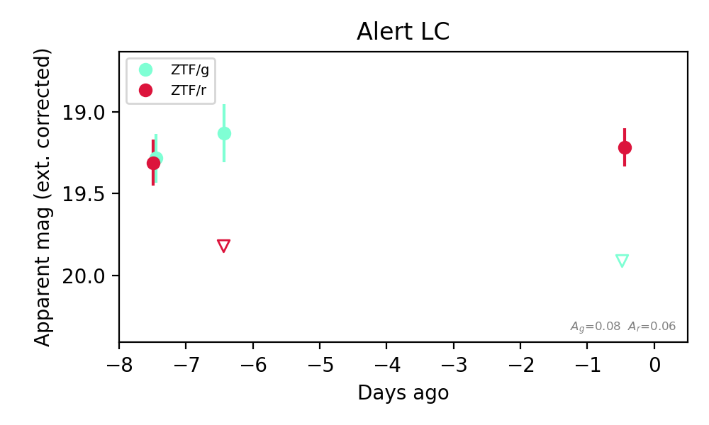
Extinction-corrected gr color:
From alerts: 0.7 +/- 99 mag
Rise Rate:
g: 0.14 mag/day
r: 0.1 mag/day
Fade Rate:
g: 0.13 mag/day
r: 0.48 mag/day
1. [ZTF] ZTF26abwqpsg (Afterglow?FBOT?) [Back to Top] [Share] [Trigger Swift] [Fritz Alert] [Fritz Source] [Lasair]RA, Dec: 261.0566, 29.39342 17h24m13.58s, 29d23m36.32sGalactic (l, b): 52.60728, 30.78385 ext(g-r) = 0.04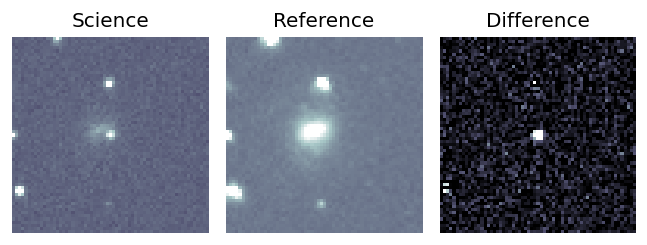
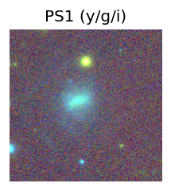
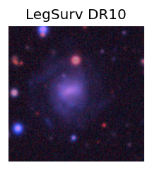
TESS: Sectors [ 25 26 52 53 79 117 118]
SDSS (<15 kpc):Found SDSS phot-z: z=0.03; peak abs mag = -17.56
PS1: 0 sources in 3 arcsec
LegacySurvey: 1 sources in 3 arcsec Closest: d = 2.29 arcsec, 2.5 deg (east of north) photoz=0.16 (68% bounds 0.07, 0.38), type=REX peak abs mag (ext. corrected) = -21.57 (68% bounds -19.65, -23.7)
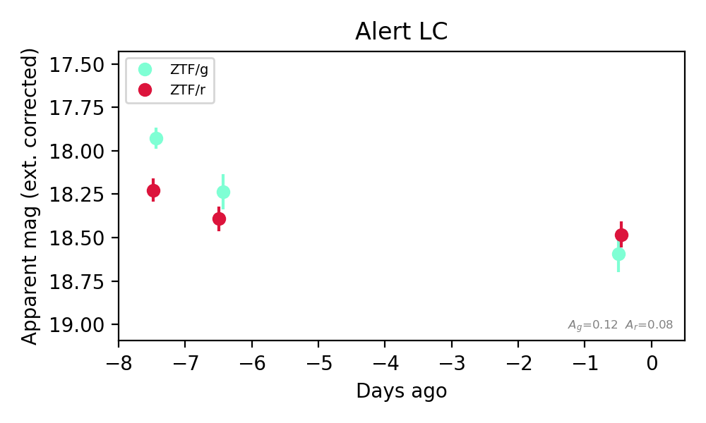
Extinction-corrected gr color:
From alerts: 0.11 +/- 0.13 mag
Consistent with synchrotron, g-r>0!
Rise Rate:
g: 0.58 mag/day
r: 0.5 mag/day
Fade Rate:
g: 0.09 mag/day
r: 0.03 mag/day
2. [ZTF] ZTF26abxjlva (FBOT?) [Back to Top] [Share] [Trigger Swift] [Fritz Alert] [Fritz Source] [Lasair]RA, Dec: 125.36769, 3.77606 8h21m28.24s, 3d46m33.83sGalactic (l, b): 220.07772, 21.7151 ext(g-r) = 0.027


TESS: Sectors [ 7 61 88 112]
SDSS (<15 kpc):Found SDSS phot-z: z=0.07; peak abs mag = -19.48
PS1: 0 sources in 3 arcsec
LegacySurvey: 1 sources in 3 arcsec Closest: d = 0.58 arcsec, 216.6 deg (east of north) photoz=0.16 (68% bounds 0.09, 0.21), type=REX peak abs mag (ext. corrected) = -21.31 (68% bounds -19.89, -22.03)

Rise Rate:
r: 0.3 mag/day
Fade Rate:
3. [ZTF] ZTF19adowohp (FBOT?) (TNS: AT 2024zul) [Back to Top] [Share] [Trigger Swift] [Fritz Alert] [Fritz Source] [Lasair]RA, Dec: 91.78226, 32.88264 6h 7m7.74s, 32d52m57.52sGalactic (l, b): 178.89006, 5.96748 ext(g-r) = 0.64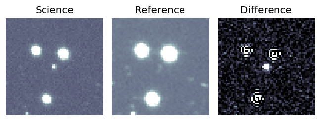
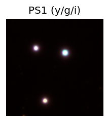

TESS: Sectors [43 44 71 72 73]
SDSS (<15 kpc):Found SDSS phot-z: z=0.74; peak abs mag = -27.92
PS1: 1 source in 3 arcsec Closest: d = 0.09 arcsec photoz=0.63+/-0.05 peak abs mag = -27.49
LegacySurvey: 0 sources in 3 arcsec
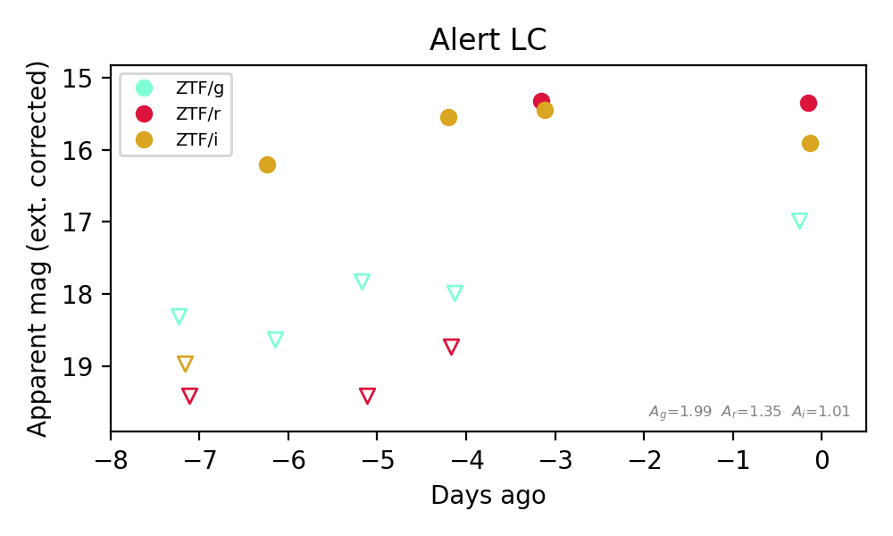
Extinction-corrected gr color:
From alerts: 1.64 +/- 99 mag
Extinction-corrected gi color:
From alerts: 1.08 +/- 99 mag
Extinction-corrected ri color:
From alerts: -0.56 +/- 0.06 mag
Rise Rate:
r: 3.38 mag/day
i: 3.0 mag/day
Fade Rate:
4. [ZTF] ZTF26abxpuxo (FBOT?) [Back to Top] [Share] [Trigger Swift] [Fritz Alert] [Fritz Source] [Lasair]RA, Dec: 303.95871, 58.65008 20h15m50.09s, 58d39m0.27sGalactic (l, b): 93.07135, 12.86943 ext(g-r) = 0.391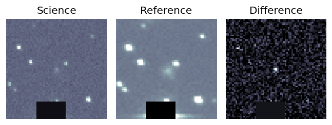
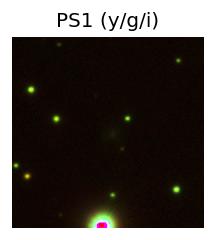

TESS: Sectors [ 14 15 17 41 55 57 75 76 77 82 83 84 120]
SDSS (<15 kpc):Found SDSS phot-z: z=0.08; peak abs mag = -19.93
PS1: 1 source in 3 arcsec Closest: d = 1.47 arcsec photoz=0.12+/-0.02 peak abs mag = -20.67
LegacySurvey: 0 sources in 3 arcsec
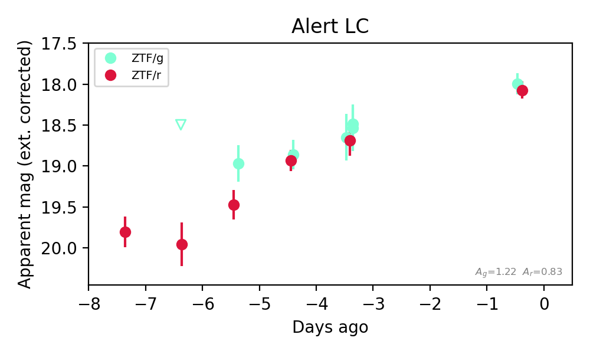
Extinction-corrected gr color:
From alerts: -0.08 +/- 0.17 mag
Consistent with synchrotron, g-r>0!
Rise Rate:
g: 0.2 mag/day
r: 0.26 mag/day
Fade Rate:
5. [ZTF] ZTF26abxwicv (FBOT?) [Back to Top] [Share] [Trigger Swift] [Fritz Alert] [Fritz Source] [Lasair]RA, Dec: 243.05313, 11.15846 16h12m12.75s, 11d 9m30.46sGalactic (l, b): 24.31842, 40.33369 ext(g-r) = 0.063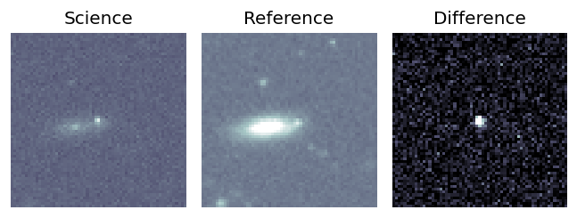
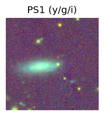
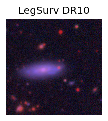
TESS: Sectors [ 51 117]
NED host (10 arcsec):Found WISEA J161213.27+110928.3 (G, 8.0″); NED spec-z: z=0.0424 [zflag SLS]; peak abs mag = -18.11
PS1: 0 sources in 3 arcsec
LegacySurvey: 1 sources in 3 arcsec Closest: d = 3.45 arcsec, 258.4 deg (east of north) photoz=0.24 (68% bounds 0.05, 0.75), type=PSF peak abs mag (ext. corrected) = -22.14 (68% bounds -18.4, -25.06)
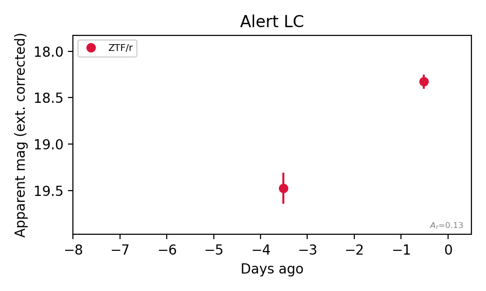
Rise Rate:
r: 0.38 mag/day
Fade Rate:
6. [ZTF] ZTF26abxztak (FBOT?) [Back to Top] [Share] [Trigger Swift] [Fritz Alert] [Fritz Source] [Lasair]RA, Dec: 98.92484, 60.48932 6h35m41.96s, 60d29m21.56sGalactic (l, b): 154.81793, 21.51497 ext(g-r) = 0.09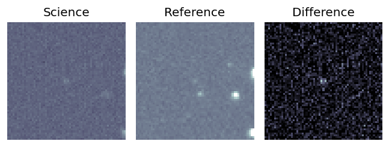
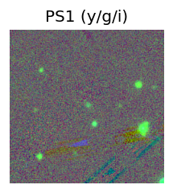
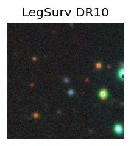
TESS: Sectors [20 60 73]
PS1: 0 sources in 3 arcsec
LegacySurvey: 1 sources in 3 arcsec Closest: d = 0.27 arcsec, 270.8 deg (east of north) photoz=0.12 (68% bounds 0.08, 0.23), type=DEV peak abs mag (ext. corrected) = -19.84 (68% bounds -18.92, -21.31)
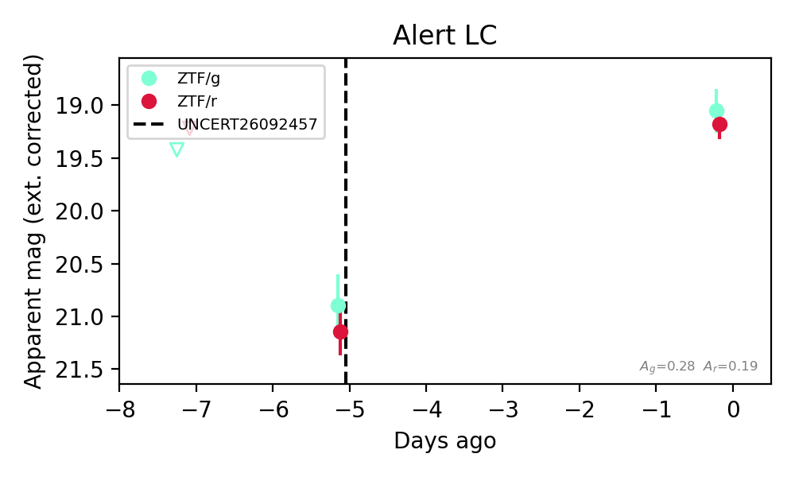
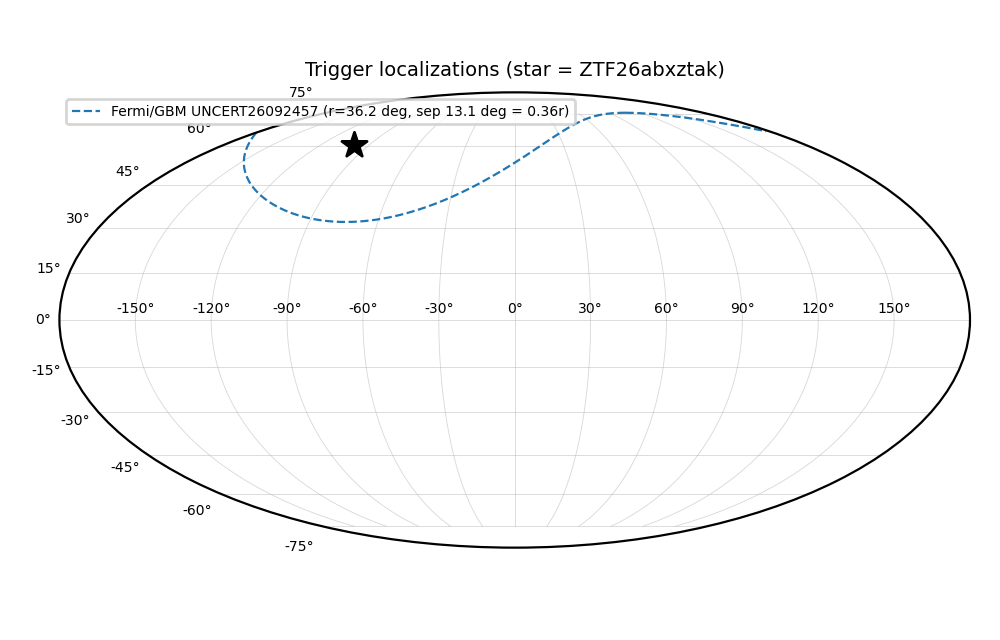
Extinction-corrected gr color:
From alerts: -0.13 +/- 0.25 mag
Consistent with synchrotron, g-r>0!
Rise Rate:
g: 0.37 mag/day
r: 0.4 mag/day
Fade Rate: